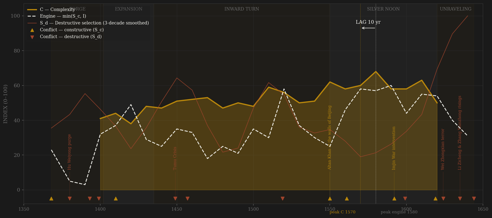
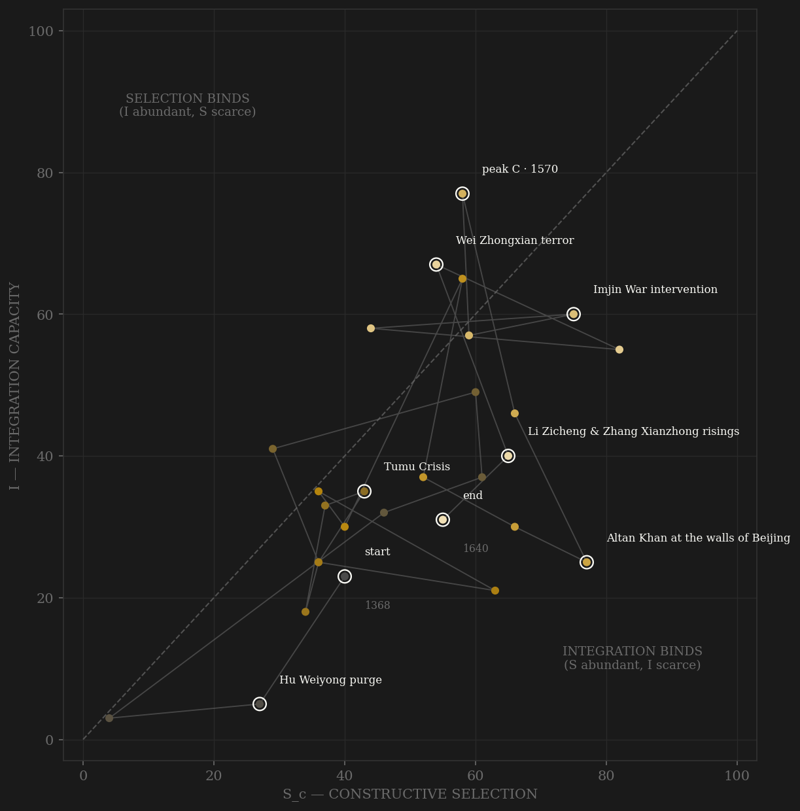

Ming runs on the thickest measured base in the premodern sample — 194,161 Veritable Records entries and 25,641 jinshi degrees, a near-census of the dynasty's entire mandarin production. Complexity is measurable only from 1400 to 1620, and inside that window it crests in the 1570s–80s: Zhang Juzheng's land survey, granaries full, Manila silver converting the tax base. What the engine does depends on what you call selection. The v1 combat-weighted series peaks fifty years AFTER complexity, in the 1620s — Liaodong war pressure meeting an intact bureaucracy — and reads −50, FAIL; that series was scrubbed of every miscoded war (Jingnan, Tumu, the princely revolts, two of the Three Great Campaigns, the peasant wars — all excised to the destructive ledger) and the peak did not move. Under the v2 contestability definition — 0.40 measured jinshi throughput, 0.30 cleaned external rivalry hard-capped, 0.30 within-rules political competition — the engine peak walks back to the 1580s: the largest exam cohorts of the century meeting the Zhang Juzheng reform contest and the guoben remonstrance wars, before Wei Zhongxian's depots destroyed the arena. Lag −10, SIMULTANEOUS. The honest caveat holds under both definitions: complexity is unmeasurable after 1620 — Maddison's gap and the Chongzhen archival void right-censor the outcome variable — so neither engine's final decade was ever given a chance to be tested. What is not censored is the mechanism of death: S_d climbs from the Wei Zhongxian terror through the peasant wars to pinned-at-100 collapse — the δ·S_d term made flesh.

No polity in the sample whipsaws like Ming. The trajectory enters at high selection and almost no measurable integration — a conquest regime with a young archive — and Hongwu's terror holds it against the left wall: every time the bureaucracy grows, the founder culls it. The fifteenth century climbs the integration axis in fits, but where Song crossed the diagonal once and stayed, Ming oscillates across it violently for two hundred years — quiet-frontier decades collapse S toward zero, crisis decades (1550, 1590) hurl the path to the far right wall. The 1570s sit deep in the selection-binds corner: Zhang Juzheng's machine at peak coordination with the frontier bought off at the horse markets — the highest-I, lowest-S decade of the dynasty, and complexity's crest follows directly on it. Then the ending, which is the diagnostic: the path runs right and down at once — external pressure rising as integration disintegrates — and dies at (70, 31), integration-bound, the mirror image of Rome's death pinned against S=0. Rome starved of contest; Ming choked on coordination collapse while contest stood at the door.
Coded by locus and target, never by outcome. Ming is the audit's stress test: the gross war chronology was contaminated in seven of twenty-eight decades, and every excision is documented in the build script. Jingnan is a war for the throne, not a frontier. Tumu is destructive not because the army lost but because the core was penetrated — emperor captured, escorting court annihilated, Beijing besieged: the Adrianople rule. Altan at the walls in 1550 stays constructive because the walls held and the levy machinery never broke — the Hannibal rule. Sarhu stays constructive because a field disaster on the frontier touches no coordination machinery, and coding by outcome is forbidden. Two of Wanli's celebrated Three Great Campaigns turn out to be internal — a garrison mutiny and a tusi rising — leaving Imjin as the late dynasty's one true peer war. The honest result: the cleaned ledger returns the same verdict as the dirty one. Ming's failure is not a coding artifact.
| YEAR | CONFLICT | CODE | CODING RATIONALE |
|---|---|---|---|
| 1368 | Expulsion of the Yuan (Dadu taken) | Sc | Founding contest with the steppe empire; external rivalry from the first year |
| 1380 | Hu Weiyong purge | Sd | ~15,000 executed, the chancellorship abolished forever — the founder amputates his own coordination organ |
| 1393 | Lan Yu purge | Sd | ~15,000 more; the command corps consumed by one old man's succession anxiety |
| 1399 | Jingnan civil war | Sd | Usurpation war on the throne itself; Jianwen loyalists exterminated — excised from the gross war channel |
| 1410 | Yongle steppe campaigns | Sc | Five emperor-led expeditions into Mongolia; peer contest at the frontier, machinery untouched |
| 1449 | Tumu Crisis | Sd | Emperor captured, escorting court annihilated, Beijing besieged — external origin, core penetrated: the Adrianople rule |
| 1457 | Duomen coup | Sd | Restoration by palace coup; Yu Qian executed — succession violence in the capital |
| 1519 | Princely revolts (Anhua 1510, Ning 1519) | Sd | Imperial clansmen rising against the throne; internal locus regardless of scale |
| 1550 | Altan Khan at the walls of Beijing | Sc | Suburbs burned but the walls held and the levy machinery never broke — the Hannibal rule |
| 1561 | Wokou suppression (Qi Jiguang) | Sc | Naval defense of the coast; external predation answered with military innovation |
| 1592 | Imjin War intervention | Sc | Peer war against Hideyoshi's Japan in Korea — the last true external contest of the dynasty |
| 1599 | Ningxia mutiny & Bozhou revolt | Sd | Two of the Three Great Campaigns were internal — garrison mutiny and tusi rising, not foreign war |
| 1619 | Sarhu | Sc | Catastrophic frontier defeat by the Later Jin — coded by locus, not outcome; the core stood |
| 1624 | Wei Zhongxian terror | Sd | The Donglin remonstrance network tortured to death in the depots — the state destroying its own error-correction |
| 1635 | Li Zicheng & Zhang Xianzhong risings | Sd | Peasant wars engulf the fiscal interior; the polity consumes itself — excised from the gross war channel |
| 1644 | Fall of Beijing | Sd | Li Zicheng enters, Chongzhen hangs himself, the Qing walk in through an opened gate — terminal core penetration |
| COMPONENT | GRADE | BASIS |
|---|---|---|
| S_c — Constructive (v2 contestability) | ◐ corpus + coded | A: CBDB jinshi throughput/yr 0.40 (measured; 25,641 degrees ≈ near-census) · B: cleaned external-rivalry ordinal 0.30 HARD CAP (S_d items excised per build_ming_sicre.py §2b audit; Dreyer 1982, Mote 1999, CHC v7–8, Swope 2009) · C: within-rules political competition 0.30 (coded 0–3 per decade — reform contests, censorate function, factional alternation without proscription; Hucker 1966, Dardess 2002; ledger in data/raw/ming/coding_ledger_v2.csv). No deviation from 0.4/0.3/0.3. Prior combat series frozen as Sc_v1_combat |
| S_d — Destructive | ◐ coded + corpus | Internal-violence ordinal (purges, civil wars, coups, princely revolts, peasant wars, core-penetrating invasions incl. Tumu 1449) 50% + Shilu rebellion-mention share 50% (masked 1630s–40s, Chongzhen void). CBDB punishment events too sparse to weight (43 dated rows — notes only) |
| I — Integration | ◐ corpus-measured | CBDB 25,560 dated appointments; Shilu court entries/yr (194,161 entries 1368–1644); coded maritime/tribute openness; silver imports (Flynn & Giráldez, von Glahn) 1550+ |
| C — Complexity | ◐ measured + reconstruction | Maddison/Broadberry GDPpc 1400–1620 (gap after 1620, never imputed); jinshi degrees/yr; Beijing population (Chandler anchors). Requires ≥2 measured components — NaN 1368–1390 and 1630–1644 |
| E — Entropy | ◐ measured + coded | Shilu disaster/relief stress share 45% + institutional-decay ordinal 45% + rebellion share 10%; 1630s–40s rest on the coded index alone (Chongzhen Shilu never compiled) |
28 decade rows rebuilt from local corpora by scripts/build_ming_sicre.py (Sc/Sd decomposition 2026-07-06; per-decade leakage audit in script §2b, per-source caveats in data/raw/ming/SOURCES.md). S_c REDEFINED 2026-07-06 per AMENDMENT_S_definition_v2.md: Sc_constructive is now the contestability composite — 0.40 elite-entry competition (measured CBDB jinshi/yr) + 0.30 peer-polity rivalry (cleaned external ordinal, hard cap) + 0.30 within-rules political competition (coded; coding_ledger_v2.csv), channels min-maxed 0–100 within dynasty before weighting (scripts/build_ming_sc_v2.py). The prior combat-weighted series is frozen alongside as Sc_v1_combat. Frozen-protocol lag under BOTH definitions: v1 engine 1620 → C 1570 = −50 FAIL; v2 engine 1580 → C 1570 = −10 SIMULTANEOUS — the verdict flip is shown, not hidden. C requires ≥2 measured components → NaN 1368–1390 and 1630–1644: Maddison's 1620→1661 gap plus the never-compiled Chongzhen Shilu right-censor the outcome variable — read both lags as measured-window truth, not claims about the unobservable 1630s. R's 1530→1550 population jump is a registered→corrected basis switch (Ge Jianxiong), not growth. Rebuild: build_ming_sicre.py, build_ming_sc_v2.py, then polity_report.py --slug ming.